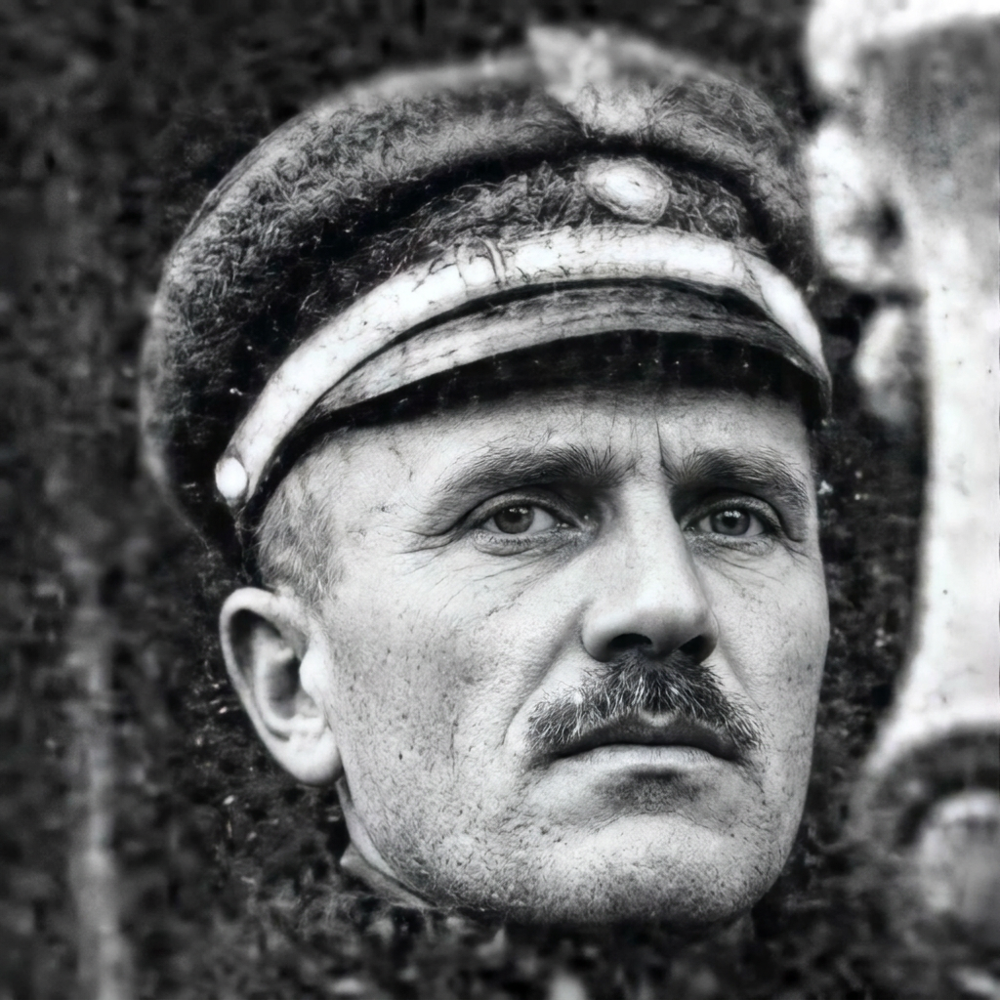
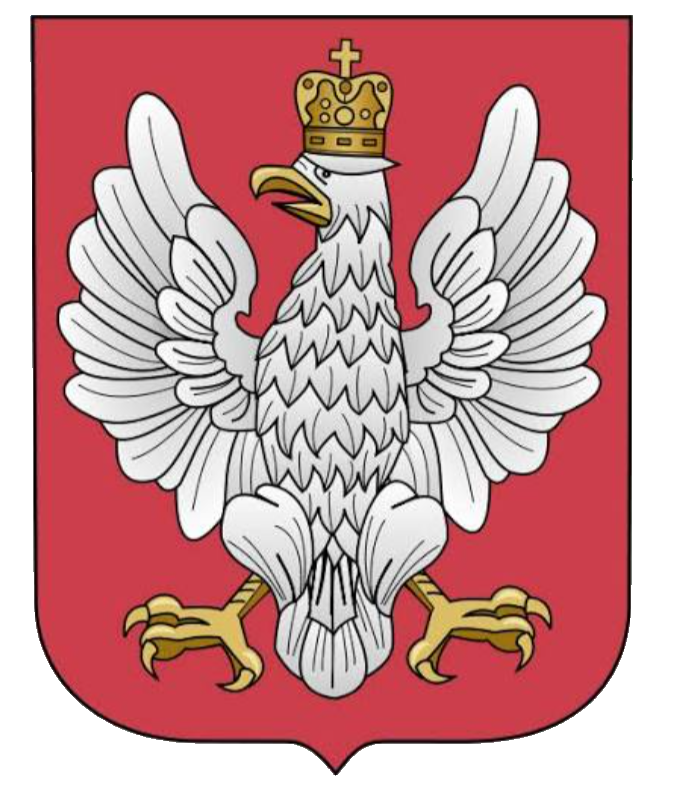

1915
Pierwsze sądy polowe
Kształtowanie się polskich formacji zbrojnych przynosi zalążki odrębnego sądownictwa wojskowego.
Zespół Badawczy im. kpt. dr. Bolesława Zajączkowskiego

Patron Instytutu
kpt. dr Bolesław Zajączkowski

Dzieje służby sprawiedliwości Wojska Polskiego
Polski niepodległej w latach 1915 — 1947
Wprowadzenie
Od pierwszych sądów polowych formujących się jeszcze w cieniu I wojny światowej, przez okres II Rzeczypospolitej i budowę niezależnego sądownictwa wojskowego, aż po tragiczne lata okupacji i pierwsze powojenne lata przemian ustrojowych — niniejsza wystawa przedstawia instytucje, ludzi i dokumenty, które współtworzyły polski wymiar sprawiedliwości wojskowej w latach 1915–1947.
Treść poglądowa — do uzupełnienia materiałem źródłowym klienta.
Chronologia
1915
Kształtowanie się polskich formacji zbrojnych przynosi zalążki odrębnego sądownictwa wojskowego.
1919
Powstają struktury sądownictwa wojskowego II Rzeczypospolitej, wraz z Naczelnym Sądem Wojskowym.
1928
Ujednolicenie przepisów oraz reorganizacja sądów okręgowych i garnizonowych.
1939–1945
Sądownictwo wojskowe działa na uchodźstwie i w konspiracji; dokumenty z tego okresu są szczególnie cenne historycznie.
1947
Zamknięcie omawianego okresu i początek głębokich przemian struktury sądownictwa wojskowego.
Materiały źródłowe
Miejsce na fotografie, dokumenty i akta udostępnione przez klienta.
Struktura
Najwyższa instancja sądownictwa wojskowego II Rzeczypospolitej, siedziba centralna spraw kasacyjnych.
Instancje pierwszego stopnia działające przy okręgach korpusów, rozpatrujące sprawy dyscyplinarne i karne.
Organy orzekające bezpośrednio przy jednostkach, w tym w warunkach polowych czasu wojny.